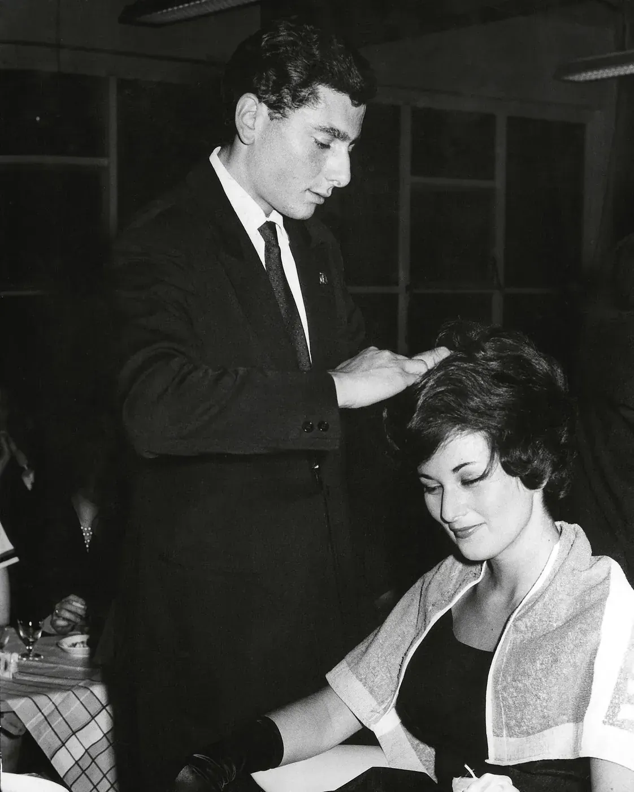
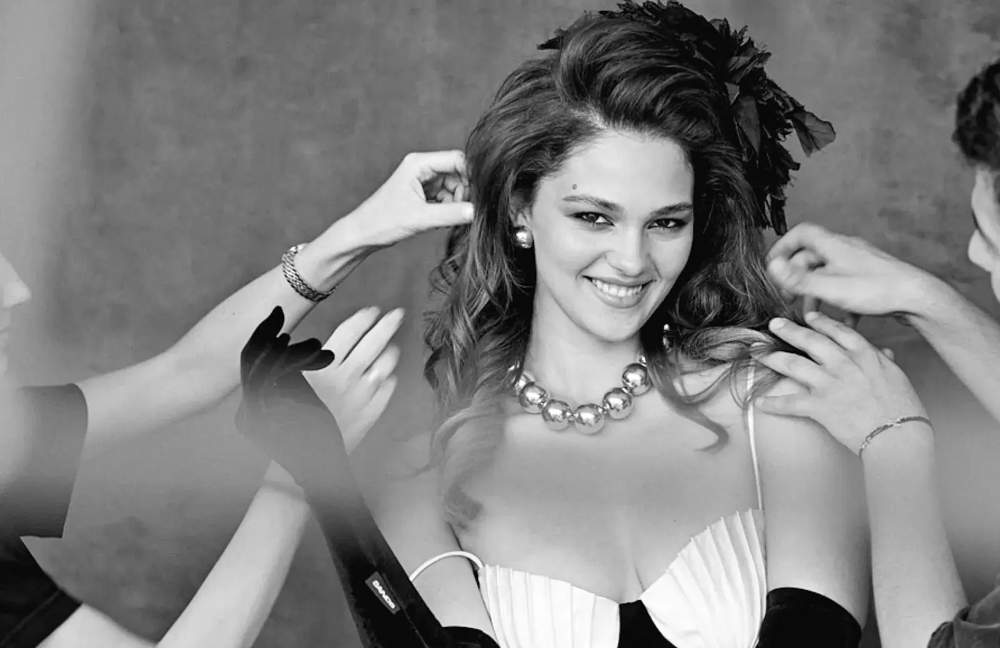
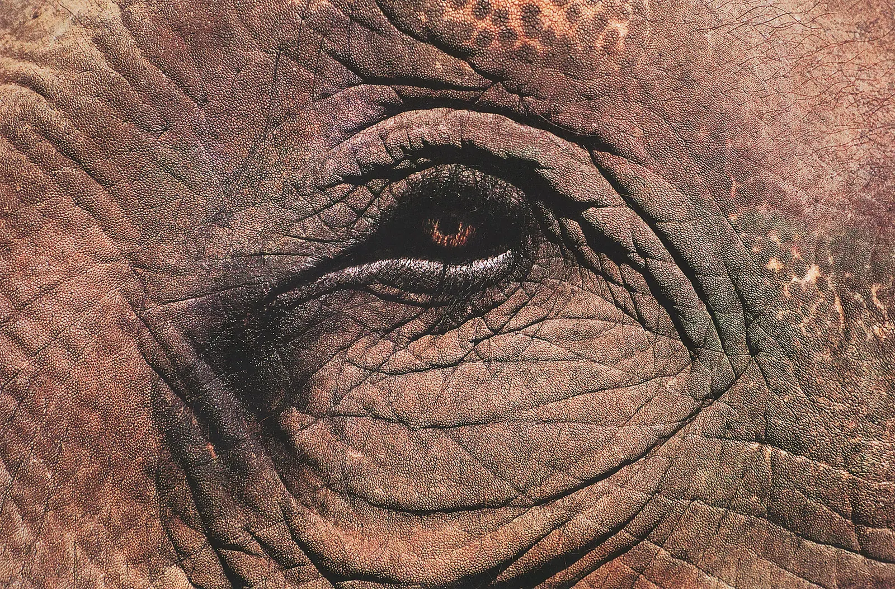

Во второй половине XX века парикмахер в мире моды был техническим специалистом: его звали за час до показа, чтобы «сделать головы». Альдо Коппола эту роль поменял. Он стал работать с дизайнерами как соавтор: причёска начинала разговор о коллекции вместе с силуэтом и тканью.
С чего всё началось
Миланский салон, открытый в 1964 году, быстро стал местом, куда приходили не за «укладкой на выход», а за образом. Маэстро формулировал задачу так: женщина должна выглядеть и чувствовать себя счастливой, а волосы — оставаться здоровыми. Для 1960-х, когда в моде были начёсы, лак и бигуди, это звучало почти дерзко.
Отсюда выросли принципы, которые до сих пор лежат в основе работы стилистов Aldo Coppola: стрижка должна держать форму сама, а цвет — выглядеть так, будто его подарило солнце.
Я хочу, чтобы женщины выглядели и были счастливыми. Здоровые волосы, натуральные цвета, причёски без хлопот.
Как причёска стала частью коллекции
Дизайнеры быстро заметили, что мастер думает теми же категориями, что и они: пропорция, линия, движение. Много лет Aldo Coppola работал с крупнейшими итальянскими домами: Giorgio Armani, Valentino, Gianfranco Ferré, Missoni, Versace, Fendi, Prada, Roberto Cavalli.
Для показа такой работы мало просто хорошо причесать модель. Нужно понять, что дизайнер хочет сказать коллекцией, и найти для этого форму волос: строгую гладкость для архитектурного кроя, лёгкую небрежность для струящихся тканей. Причёска перестаёт быть фоном и становится высказыванием.

Кто снимал работы Aldo Coppola
С брендом в разные годы работали фотографы, чьи имена знает каждый, кто листал модные журналы: Оливьеро Тоскани, Фабрицио Ферри, Хавьер Вальонрат, Хельмут Ньютон, Хорст П. Хорст, Ханс Фойер, Дэвид Бэйли, Барри Латеган, Джан Паоло Барбьери.
Работы мастеров выходили в Vogue Italia, Elle, Marie Claire, Amica, Grazia. Один из известных кадров — съёмка для Vogue Italia 1980 года с Дэвидом Бэйли: высокая объёмная причёска и контрастный макияж. Московская команда Aldo Coppola воссоздала этот образ для арт-проекта Tribute to Aldo Coppola.

Что такое Live Show и зачем его придумали
В 1983 году маэстро вывел парикмахерское искусство на сцену. Live Show — живое шоу, где стилисты показывают коллекцию стрижек, укладок и окрашиваний так, как дизайнеры показывают одежду: со светом, музыкой и драматургией. Это было первое подобное шоу в мире.
Формат прижился. Сегодня творческая команда Aldo Coppola проводит Live Show в Милане дважды в год, а на него приезжают стилисты и колористы со всего мира. Московские арт-стилисты выходят на сцену вместе с итальянскими коллегами. Подробнее — в нашем материале о том, как рождаются тенденции сезона.
Календари, которые стали искусством
С 1990 по 2007 год бренд выпускал арт-календари, и каждый был самостоятельным проектом. Ganesh 1997 года — путешествие среди слонов, рек и высоких трав. Ninfa 2003 года — нимфы в зелёных садах, с цветами и травами в волосах. Параллельно выходили артбуки: Luna, Metamorfosi, Elementi, Natura Magica.

В этих работах хорошо видно, как маэстро понимал красоту: волосы живые, в движении, они продолжают пейзаж и не спорят с лицом.
Что из этого осталось сегодня
Альдо Коппола ушёл в 2013 году, компанией руководит его сын. Принципы остались прежними, и их легко узнать в работе любого стилиста бренда:
- форма строится так, чтобы держаться без долгой укладки;
- цвет должен выглядеть естественно, отсюда техника Shatush и травяное окрашивание Infusion;
- стилист следит за модой изнутри: техники приходят со сцены Live Show, а не из рекламных буклетов.
Вопросы и ответы
Когда основан бренд Aldo Coppola?
Первый салон Альдо Коппола открыл в Милане в 1964 году. В России бренд работает с 1996 года.
С какими модными домами работал Aldo Coppola?
С Giorgio Armani, Valentino, Gianfranco Ferré, Missoni, Versace, Fendi, Prada, Roberto Cavalli и другими.
Что такое Live Show Aldo Coppola?
Парикмахерское шоу, которое маэстро придумал в 1983 году: коллекцию стрижек и окрашиваний показывают на сцене, как одежду на подиуме. Сейчас его проводят в Милане дважды в год.
Кто руководит компанией сейчас?
После смерти маэстро в 2013 году компанией руководит его сын Aldo Coppola Jr.
Источники
- Архив и раздел Art официального сайта Aldo Coppola, aldocoppola.com
- Презентация Aldo Coppola Russia, 2025
- Материалы проекта Tribute to Aldo Coppola, Aldo Coppola Москва